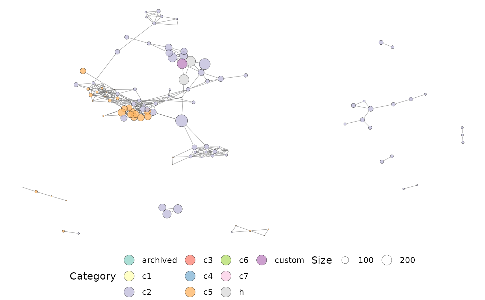

This function can be used to perform a network-based enrichment analysis of a list of genes. The list of genes are characterised based on their similarity with gene sets from the MSigDB. A network of similar gene sets is retrieved using this function.
a GeneSet object, representing the list of genes that need to be characterised.
a numeric, specifying the threshold to discard pairs of gene sets.
a character, specifying the similarity measure to use: ari
for the Adjusted Rand Index, jaccard for the Jaccard Index and
ovlapcoef for the Overlap Coefficient.
a character, listing the MSigDB collections to use as a
background (defaults to h, c2, and c5). Collection types can be retrieved
using msigdb::listCollections().
a character, specifying the organism to use. This can either be "auto" (default), "hs" or "mm".
an igraph object, containing gene sets that are similar to the query set. The network contains relationships between results of the query too.
library(GSEABase)
#> Loading required package: BiocGenerics
#>
#> Attaching package: ‘BiocGenerics’
#> The following objects are masked from ‘package:stats’:
#>
#> IQR, mad, sd, var, xtabs
#> The following objects are masked from ‘package:base’:
#>
#> Filter, Find, Map, Position, Reduce, anyDuplicated, append,
#> as.data.frame, basename, cbind, colnames, dirname, do.call,
#> duplicated, eval, evalq, get, grep, grepl, intersect, is.unsorted,
#> lapply, mapply, match, mget, order, paste, pmax, pmax.int, pmin,
#> pmin.int, rank, rbind, rownames, sapply, setdiff, sort, table,
#> tapply, union, unique, unsplit, which.max, which.min
#> Loading required package: Biobase
#> Welcome to Bioconductor
#>
#> Vignettes contain introductory material; view with
#> 'browseVignettes()'. To cite Bioconductor, see
#> 'citation("Biobase")', and for packages 'citation("pkgname")'.
#> Loading required package: annotate
#> Loading required package: AnnotationDbi
#> Loading required package: stats4
#> Loading required package: IRanges
#> Loading required package: S4Vectors
#>
#> Attaching package: ‘S4Vectors’
#> The following objects are masked from ‘package:base’:
#>
#> I, expand.grid, unname
#> Loading required package: XML
#> Loading required package: graph
#>
#> Attaching package: ‘graph’
#> The following object is masked from ‘package:XML’:
#>
#> addNode
data(hgsc)
#create a geneset using one of the Hallmark gene sets
mySet <- GeneSet(
geneIds(hgsc[[2]]),
setName = 'MySet',
geneIdType = SymbolIdentifier()
)
# \donttest{
#characterise the custom gene set
ig <- characteriseGeneset(mySet)
#>
#> snapshotDate(): 2022-02-22
#> see ?msigdb and browseVignettes('msigdb') for documentation
#> loading from cache
#> Warning: Assuming the organism to be human.
plotMsigNetwork(ig)

# }